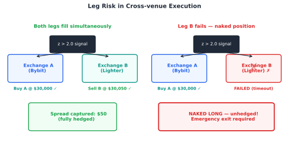

14.2 Leg Risk — ความเสี่ยงที่อันตรายที่สุดใน Cross-venue
Leg risk เกิดเมื่อเปิด Leg A สำเร็จ แต่ Leg B ล้มเหลว ทำให้เกิด single-leg exposure — ขณะนี้คุณไม่ได้ trade spread แต่กำลัง directional long/short โดยไม่ตั้งใจ และไม่มี hedge
สถานการณ์อันตราย — Leg B Fail
สัญญาณ: ε สูงเกิน → Long Bybit + Short Lighter
สำเร็จ: Long Bybit $100,000 (Leg A) ✓
ล้มเหลว: Short Lighter ไม่ fill ใน 500ms (Leg B) ✗
ผล: คุณ Long BTC $100,000 โดยไม่มี hedge — ถ้า BTC ร่วง 2% = ขาดทุน $2,000 ทันที

ซ้าย: execution สำเร็จ — ทั้งสอง leg fill พร้อมกัน, spread captured, fully hedged | ขวา: Leg B fail — position naked LONG ต้องทำ emergency exit ทันที
วิธีลด Leg Risk
ใช้ simultaneous order placement — ส่งคำสั่งทั้งสองตลาดเกือบพร้อมกัน
ตั้ง timeout สั้น (300–500ms) — ถ้า B ไม่ fill ให้ปิด A ทันที
ใช้ limit order ที่ aggressive — ใกล้ mid price เพื่อให้ fill เร็ว
Execution flowchart: Submit Leg A (maker) → Leg B (taker) → ทุก branch มี handler; Leg fail → partial adjust หรือ emergency flatten; ไม่มี "undefined state"
14.4 Synchronization Strategy — สามแนวทาง
วิธีที่จะส่ง order ทั้งสองขามีผลต่อ leg risk, latency overhead และ complexity ของ code
แนวทาง
วิธีการ
Leg Risk
Latency
Complexity
Simultaneous
ส่งทั้ง A และ B ในเวลาเดียวกัน (async)
ต่ำ — overlap เล็กน้อย
ต่ำ
กลาง
Sequential
ส่ง A ก่อน รอ fill แล้วจึงส่ง B
สูง — รอ fill A = exposed
สูง (A_latency + B_latency)
ต่ำ
Conditional
ส่ง A ก่อน ถ้า fill ส่ง B ทันที ถ้าไม่ cancel
กลาง — มี logic ควบคุม
กลาง
สูง
Bybit↔Lighter แนะนำ: Simultaneous + Timeout
ส่ง order ทั้งสองตลาดพร้อมกันใน async threads จากนั้น wait ด้วย timeout
ถ้าทั้งคู่ fill ภายใน 500ms → SUCCESS
ถ้า A fill แต่ B ไม่ fill → cancel B แล้ว market close A ทันที
14.5 Order Types ที่ใช้ใน Stat Arb
การเลือก order type มีผลต่อทั้ง fill probability และ slippage cost
Slippage จริง vs คาด: ถ้า signal คำนวณที่ mid price แต่ fill ที่ ask/bid → slippage ~0.5 tick ต่อข้าง ต้องคิดในสมการ expected profit
บนโต๊ะจริง — Cross-venue Execution ใน Production
Maker-first sequencing: submit Leg A เป็น maker (fee ต่ำกว่า) ก่อน; submit Leg B taker หลังจาก maker confirm — timeout 500ms ถ้า maker ไม่ fill, cancel และรอ signal ครั้งถัดไป
Position reconciliation ทุก 30 วินาที: ตรวจว่า position จริงบน exchange ตรงกับ system state; ถ้า NAV difference > 0.1% → alert ทันที
Emergency exit protocol: ถ้า Leg B fail หลัง 3 retry → market-close Leg A ทันที ไม่ว่า cost เท่าไร; cost ของ emergency exit < risk ของ naked position overnight เสมอ
Separate API rate limits: exchange A และ B ใช้ rate limit pool แยกกัน — อย่าให้ retry loop ของ Leg B burn rate limit ที่ใช้ monitor Leg A
คณิตที่พัง — เมื่อ Cross-venue Execution พัง
API brownout ในช่วง high-vol: exchange มักมี partial outage ตอน volatility สูงสุด — ช่วงที่ strategy อยากเทรดมากที่สุดคือช่วงที่ infrastructure ล้มเหลวบ่อยที่สุด; ไม่มีระบบใดรับประกัน 100% fill
Leg risk ไม่ symmetric: ถ้า Leg A เป็น long และ Leg B fail → naked long ในช่วง spike อาจขาดทุนหนักมาก; ถ้า Leg A เป็น short → naked short อาจถูก short squeeze; ต้องประเมิน worst case ของแต่ละทิศทาง
Latency arbitrage vs stat arb: cross-venue stat arb ต้องการ execution ภายใน window ที่ spread ยัง elevated — ถ้า latency > 2× expected holding time จะ systematically ซื้อสูงขายต่ำโดยไม่รู้ตัว